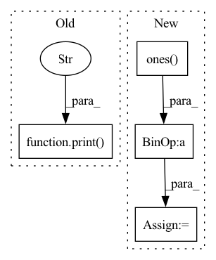

Pattern ID :3112

Before Change
tokenizer,
output_data.transpose([1, 2, 0]).tolist()[0][0], bos_id, eos_id)
print("Model input:", inputs)
print("Result:", result)
if __name__ == "__main__":
args = setup_args()
After Change
axis=0)
// Forced bos token ids
forced_bos_token = np.ones([args.batch_size, 1], dtype="int32") * bos_id
// Load FasterTransformer lib.
load("FasterTransformer", verbose=True)
In pattern: SUPERPATTERN
Frequency: 3
Non-data size: 4
Instances
Fragment ID: 11952039
Project Name: paddlepaddle/paddlenlp
Commit Name: 521fd43191192a3a828b2ae2cd226e4264f99a91
Time: 2022-09-27
Author: 380185688@qq.com
File Name: paddlenlp/ops/faster_transformer/sample/mbart_inference.py
M Class Name: AnonimousClass
N Class Name: AnonimousClass
M Method Name: infer(1)
N Method Name: infer(1)
M Parent Class:
N Parent Class:
M File Name: paddlenlp/ops/faster_transformer/sample/mbart_inference.py
N File Name: paddlenlp/ops/faster_transformer/sample/mbart_inference.py
M Start Line: 56
M End Line: 90
N Start Line: 61
N End Line: 113
'>
Before Change
print("a:",a)
print("b:",b)
print("a+b:",c)
print("a-b:",d)
if __name__ == "__main__":
unittest.main()
After Change
assert np.allclose(d.data,(a-b).data)
dca, dcb = jt.grad(c,[a,b])
dda, ddb = jt.grad(d,[a,b])
one=np.ones(a.shape)
mone=one*-1.0
assert np.allclose(dca.data,one)
assert np.allclose(dcb.data,one)
assert np.allclose(dda.data,one)
'>
Fragment ID: 11952044
Project Name: jittor/jittor
Commit Name: dfa1a4d999bdbcc6076face4e18e61ed8733fb1f
Time: 2020-07-06
Author: 471184555@qq.com
File Name: python/jittor/test/test_numpy_code_op.py
M Class Name: TestCodeOp
N Class Name: TestCodeOp
M Method Name: test(1)
N Method Name: test(1)
M Parent Class: unittest.TestCase
N Parent Class: unittest.TestCase
M File Name: python/jittor/test/test_numpy_code_op.py
N File Name: python/jittor/test/test_numpy_code_op.py
M Start Line: 30
M End Line: 44
N Start Line: 37
N End Line: 57
'>
Before Change
Renormalized message passing adj in `GCN`.
// add self loop
print("calculating the renormalized message passing adj, please ensure that self-loop has added to adj.")
adj = sp.coo_matrix(adj)
rowsum = np.array(adj.sum(1))
d_inv_sqrt = np.power(rowsum, -0.5).flatten()
d_inv_sqrt[np.isinf(d_inv_sqrt)] = 0.
After Change
Renormalized message passing adj in `GCN`.
// add self loop
adj = adj + np.diag(np.ones(adj.shape[0], dtype=np.float32))
// print("calculating the renormalized message passing adj, please ensure that self-loop has added to adj.")
adj = sp.coo_matrix(adj)
rowsum = np.array(adj.sum(1))
'>
Fragment ID: 11952041
Project Name: zezhishao/basicts
Commit Name: e3e8cb23e964eebbd923558a975a1a09669379c7
Time: 2022-05-02
Author: 864453277@qq.com
File Name: basicts/utils/adjacent_matrix_norm.py
M Class Name: AnonimousClass
N Class Name: AnonimousClass
M Method Name: symmetric_message_passing_adj(1)
N Method Name: symmetric_message_passing_adj(1)
M Parent Class:
N Parent Class:
M File Name: basicts/utils/adjacent_matrix_norm.py
N File Name: basicts/utils/adjacent_matrix_norm.py
M Start Line: 84
M End Line: 90
N Start Line: 84
N End Line: 91